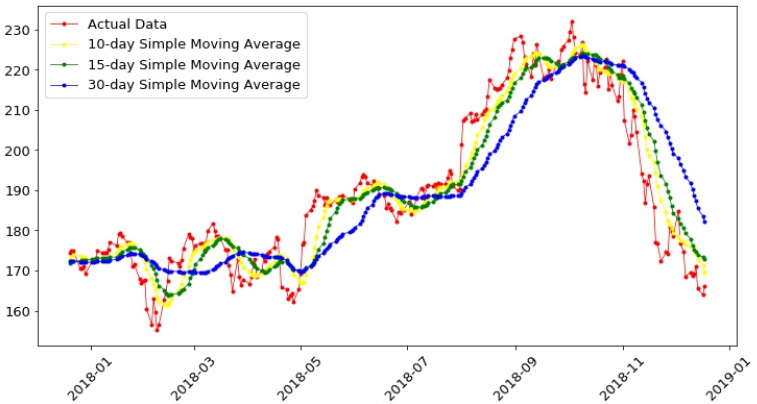
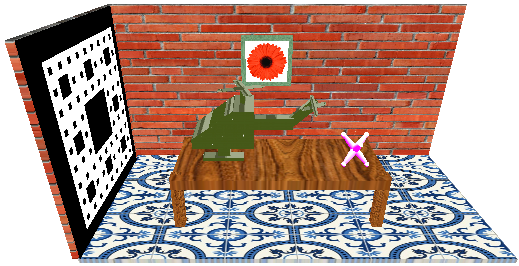
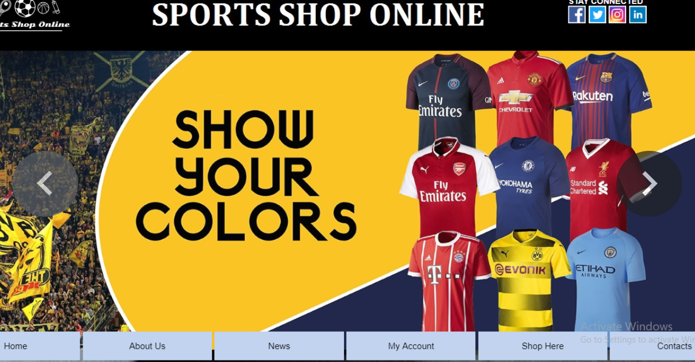

Academic Projects
COMPUTER VISION PROJECT
Bangla Handwritten Digit Recognizer using Neural Networks (June 2020) ★Python ★Ekushe Dataset ★Computer Vision ★Neural Network
COMPUTER SECURITY PROJECT
File encryption and decryption using RSA Algorithm and Prime Number Cipher (Feb 2019 – Jun 2019) ★C++ ★Cryptography ★Encryption-Decryption ★RSA Algorithm ★Prime Number Cipher

MACHINE LEARNING PROJECT
Stock Price Prediction using Traditional Statistical Approach and Machine Learning Approach (Aug 2019 – Oct 2019) ★Python ★Stock Market Forecasting ★Machine Learning ★Statistical Methods
COMPILER PROJECT
A Compiler for Customized Programming Language (Aug 2018 – Dec 2018) ★C ★Flex ★Bison

DESKTOP APP PROJECT
Desktop based E-commerce Application for Windows (Aug 2018 – Jan 2019) ★C# ★Windows Forms ★Firebase Realtime Database ★Firebase Storage ★Visual Studio

GRAPHICS PROJECT
Generation of 3D Image using OpenGL (Aug 2019 – Dec 2019) ★C++ ★OpenGL ★GLUT ★Texturing ★Lighting ★Fractal

WEB PROJECT
A Website for Shopping Sports Goods (Feb 2018 – Jul 2018) ★C# ★ASP.Net ★SQL Server ★HTML ★CSS ★JavaScript
PERIPHERAL PROJECT
Gas Leakage Detector using Arduino and GSM Module with SMS Alert and Sound Alarm (Feb 2018 – Jul 2018) ★Arduino Uno ★GSM Module(SIM 900A) ★MQ5 Gas Sensor ★16x2 LCD Display ★Transistor(2N2222) ★Potentiometer ★Buzzer ★Bread Board
DATABASE PROJECT
Soccer Tournament Database Management System (Feb 2018 – Jul 2018) ★Oracle ★SQL ★PLSQL ★Toad Data Modeler
Professional Projects
HUAWEI PROJECT
Data Processing and Script Preparation Tool Automation Tool (Apr 2022 - Dec 2022) ★ Merging individual 2G sites' Frequency Plans ★ Merging individual 4G sites' Cell Description Work Orders ★ Merging 2G and 4G IP Plans, extracting Huawei IPs and Adding Clock Server IPs ★ Checking out of range frequencies ★ Extract required data from individual sites' D4U and D4B ★ Checking BSC Neighbour data availability and generating LTE local neighbour scripts ★ Merging DSS Script work orders for LTE and GSM individual sites ★ Generating data for master tracker for the project ★ Extract required data from 2G Frequency Plan, 4G Cell Description, D4U/D4B and master tracker data and combine them all to generate service verification test scripts ★ Extract required data from 2G Frequency Plan, 4G Cell Description, 2G and 4G IP Plans, Clock Seever IP Plan, BSC Abis Data to generate CME Site Creation Summary Script
BANGLALINK PROJECT
LTE TDD (Sep 2022 - Dec 2022) Associated with Huawei Wireless Technical Team ★ Deployment of Time Division Duplexing technology for the first time in Bangladesh for Banglalink network ★ 300 Sites successfully configured)

ROBI PROJECT
GSM-UMTS-LTE (May 2022 - Dec 2022) Associated with Huawei Wireless Technical Team ★ 513 New BTS5900 GSM-LTE Sites ★ 300 GSM-UMTS-LTE Nokia to Huawei Swap Sites ★ 350 GSM-UMTS-LTE Huawei Sites Hardware Modernization